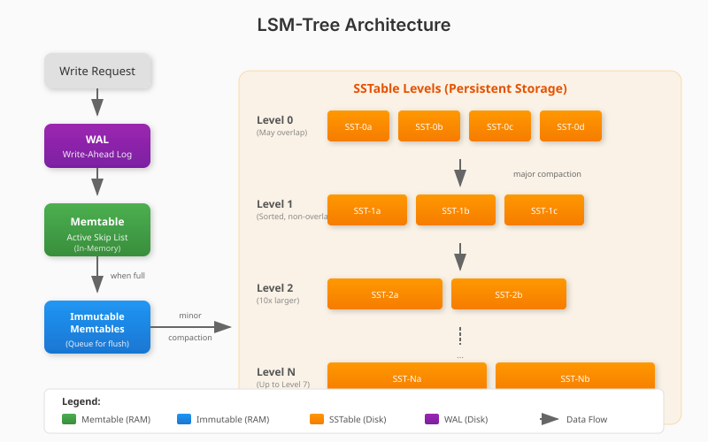

Memcached Protocol Compatibility
Drop-in replacement for memcached with full text protocol support. Use existing memcached clients seamlessly with GET, SET, DELETE, and all standard commands.
Enterprise-grade capabilities powered by modern Rust architecture
Drop-in replacement for memcached with full text protocol support. Use existing memcached clients seamlessly with GET, SET, DELETE, and all standard commands.
Unlike traditional memcached, MirDB persists data to disk using Sorted String Tables (SSTables). Your data survives restarts and system failures.
Built on a Log-Structured Merge-tree design optimized for write-heavy workloads. Data flows through memtables to multi-level SSTables for efficient storage.
Powered by Tokio's async runtime for high-performance, non-blocking I/O. Handle thousands of concurrent connections with minimal resource overhead.
In-memory skip list data structure provides O(log n) lookups and insertions. Custom implementation optimized for database workloads with efficient memory management.
Background compaction threads optimize storage automatically. Minor compaction flushes memtables to Level 0, while major compaction merges SSTables across levels.
MirDB is compatible with standard Memcached clients. Here's how to connect and use it with popular client libraries.
import pymemcache
from pymemcache.client.base import Client
# Connect to MirDB (same as connecting to memcached)
client = Client('localhost:12333')
# Store a key-value pair (persisted to disk!)
client.set('user:1', '{"name": "Alice", "email": "alice@example.com"}')
# Retrieve the value
result = client.get('user:1')
print(result) # b'{"name": "Alice", "email": "alice@example.com"}'
# Delete a key
client.delete('user:1')const Memcached = require('memcached');
// Connect to MirDB
const memcached = new Memcached('localhost:12333');
// Store a value with persistence
memcached.set('session:abc123', { userId: 42 }, 0, (err) => {
if (err) throw err;
console.log('Session stored and persisted!');
});
// Retrieve the value
memcached.get('session:abc123', (err, data) => {
console.log(data); // { userId: 42 }
});require 'dalli'
# Connect to MirDB using Dalli (memcached client)
client = Dalli::Client.new('localhost:12333')
# Set a key with persistence
client.set('cache:products', products.to_json)
# Get the cached data
cached = client.get('cache:products')
products = JSON.parse(cached)MirDB uses an LSM-tree (Log-Structured Merge-tree) architecture optimized for write-heavy workloads

Active in-memory skip list that receives all write operations. Provides O(log n) insertions and lookups with efficient memory management.
When the active memtable reaches capacity (4MB), it becomes immutable and is queued for flushing to disk while a new memtable takes over writes.
Sorted String Tables organized in levels (0-7). Level 0 files may overlap; higher levels are sorted and non-overlapping for efficient reads.
Current development progress and future roadmap
Default configuration values and storage parameters
0.0.0.0:12333
7
100MB
4MB
4KB